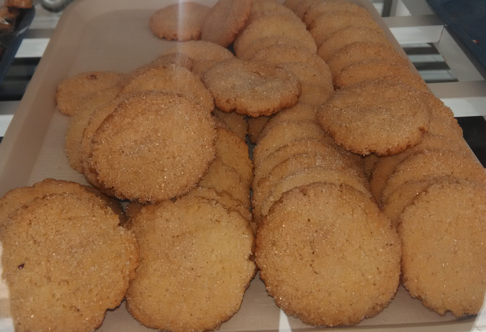

The history of their bakeshop was was established on July 22, 2015. And it is located at Remolador Ext. Barangay Cogon Tagbilaran City. Many people bought in their bread because it was freshy made bread. They aim on making new menu products to their business and to be able to introduce the filipino handmade cooking.
